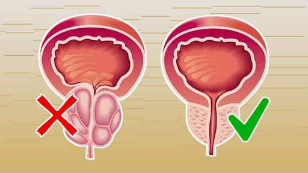

Înșeală sistemul: Ce trebuie să știe un bărbat pentru a vindeca prostatita și a nu se mai îmbolnăvi
Am scris de multe ori despre ceea ce este important să facă un bărbat pentru a reduce riscul de inflamație a prostatei, care poate duce la cancer. Recent, răspândirea acestei probleme crește în fiecare an. Prin urmare, dorim să arătăm o altă metodă de protecție, pe care oamenii de știință au găsit-o nu numai eficientă, ci și plăcută.
Studiul, ale cărui rezultate au fost publicate încă în 2020, confirmă faptul că acizii grași polinesaturați, care fac parte din uleiul de cânepă, îmbunătățesc nu numai imunitatea, ci și reduc riscul inflamației prostatei. Andrologul Hanzi Rafa vă va spune despre acest lucru în detaliu în interviul nostru.
- Bună ziua, doctore. Spuneți-ne, din ce motive bărbații au prostatită?
- Bună ziua. Prostatita apare atunci când glanda prostatică devine inflamată. Acest lucru se poate fi din cauza infecției, stresului, activității fizice scăzute și vieții sexuale neregulate. Toți acești factori sunt strâns legați de deteriorarea alimentării cu sânge. Nu numai a penisului, ci și a creierului. În zilele noastre, aceasta este o problemă foarte actuală din cauza unui stil de viață sedentar, a obiceiurilor proaste și a bolilor concomitente. Ca rezultat: bărbații au o circulație sanguină slabă și o producție redusă de testosteron. Acest lucru duce la probleme intime precoce și inflamații ale prostatei.
- Ce tratament este de obicei prescris de medici?
- Totul depinde de gradul și cauza bolii. Din păcate, foarte des soluția la problema inflamației prostatei nu este abordată corect. Nu toată lumea trebuie să administreze antibiotice, medicamente antiinflamatorii și alfa-blocante. Astfel de medicamente grave au multe efecte secundare și pot afecta negativ funcția sexuală. Cel mai recent, am atras atenția asupra unui studiu global al oamenilor de știință, în care s-a dovedit că pentru a îmbunătăți fluxul de secreții ale glandelor și circulația sângelui, nu este necesar să beți blocante, să faceți terapie fizică și masaj direct al prostatei. Toate aceste proceduri neplăcute și dureroase pot fi înlocuite cu uleiul de cânepă. Așa că am introdus în practica mea capsule , care includ nu numai uleiul, ci și alte ingrediente naturale care îmbunătățesc sănătatea bărbaților în general.
- Spuneți-ne în detaliu despre acest medicament, ce reprezintă și cum acționează asupra corpului bărbaților.
- Un complex organic sub formă de capsule nu este similar cu niciun medicament cunoscut pentru prostatită. Se bazează pe acizi grași polinesaturați din ulei de cânepă. Este recunoscut ca fiind unul dintre cele mai utile, deoarece conține mai mult de 400 de substanțe biologic active, inclusiv acizi grași esențiali: acid linoleic (clasa omega-6); acid alfa-linoleic (clasa omega-3) și acid linoleic gamma (clasa omega-9). Medicamentul include, de asemenea, ingrediente naturale puternice selectate cu atenție, care îmbunătățesc nu numai funcția sexuală, ci și stimulează fluxul sanguin în organism. Din aceasta, toate organele, inclusiv creierul, încep să funcționeze corect. Este important de menționat că compoziția este selectată astfel încât să excludă reacțiile alergice și efectele negative asupra sistemului cardiovascular și a organelor interne.
- Încă nu înțeleg cum funcționează acest remediu.
- Totul este foarte simplu. Inflamația prostatei este foarte strâns legată de fondul hormonal. Uleiul de cânepă crește fertilitatea și sinteza testosteronului, îmbunătățind circulația sângelui, crescând excitația sexuală și întărind sistemul nervos. În plus, riboflavina și carotenul incluse în compoziție protejează glanda prostatică de leziuni și procese inflamatorii, reducând dezvoltarea cancerului de prostată.

- Ce puteți spune despre utilizarea capsulelor în practica dvs.?
- Am observat istoricul medical al pacienților mei și am observat că administrarea medicamentului vă permite să simțiți o ușurare semnificativă în prima săptămână. După 2 săptămâni de la începerea administrării, 98% dintre pacienți au un efect stabil și eliminarea completă a simptomelor de prostatită.
- Acest remediu trebuie luat cu altceva sau este suficient pentru tratament?
- Totul este individual. Vă recomand ca la primele simptome de prostatită să începeți să luați capsule cu o dietă și o activitate fizică moderată. Acest lucru vă va ajuta să evitați administrarea medicamentelor suplimentare.
- Poate fi luat pentru prevenire?
- Desigur. Uleiul de cânepă întărește imunitatea, astfel încât aportul său stimulează îmbunătățirea generală a organismului. Capsulele sunt concepute pentru bărbații care își apreciază sănătatea. Problemele de sănătate și schimbările legate de vârstă pot începe în orice moment. Indiferent cât de ani aveți, aveți grijă de dvs. acum. Mai mult decât atât, o strategie terapeutică bine dezvoltată vă va ajuta să vă salvați de problema prostatitei pentru totdeauna.
- Vă mulțumim foarte mult pentru a ajuta cititorii noștri să înțeleagă acest aspect problematic.
- Mulți bărbați cred că durerea de prostată și urinarea frecventă sunt un fenomen normal care va trece de la sine. Nu e așa. Șansa de recuperare cu diagnosticarea în timp util este de 90%. Prin urmare, nu întârziați tratamentul. Și acționați dacă observați unul dintre aceste simptome:
- durere sau senzație de arsură la urinare (disurie);
- Tulburări urinare;
- decolorarea urinei și/sau a materialului seminal;
- apariția sângelui în urină și/sau material seminal;
- durere și/sau disconfort la nivelul abdomenului, inghinalului sau spatelui inferior;
- durere și/sau disconfort în perineu;
- durere și/sau disconfort la nivelul penisului și testiculelor;
- durere și/sau disconfort în timpul ejaculării;
- creșterea temperaturii corpului (în prostatita bacteriană acută).
În special pentru redacția noastră, Dr. Hanzi Rafa a furnizat un link către site-ul oficial al producătorului medicamentului pentru prostatita . Potrivit lui, numai acolo puteți cumpăra bunuri originale fără marjă suplimentară.